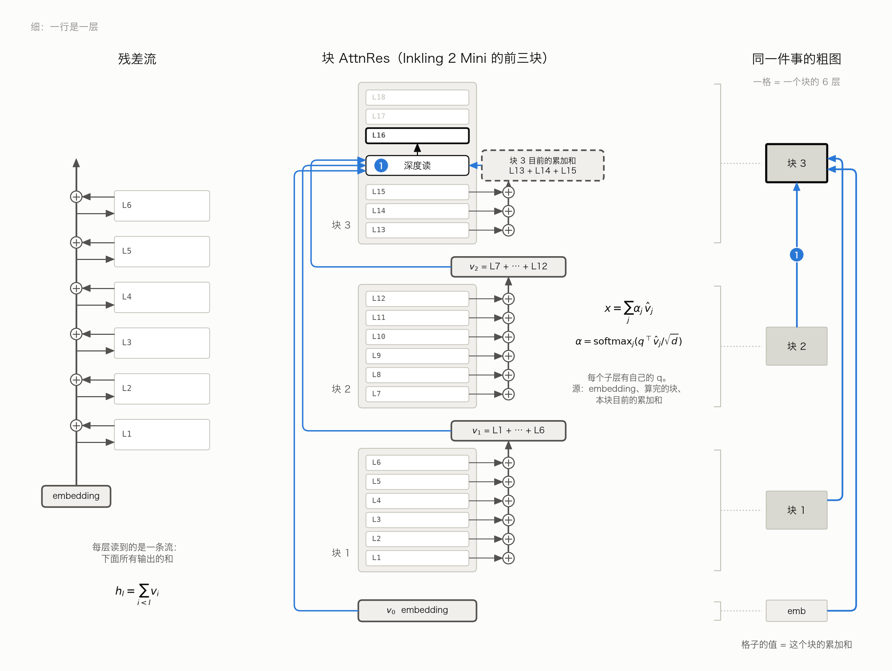
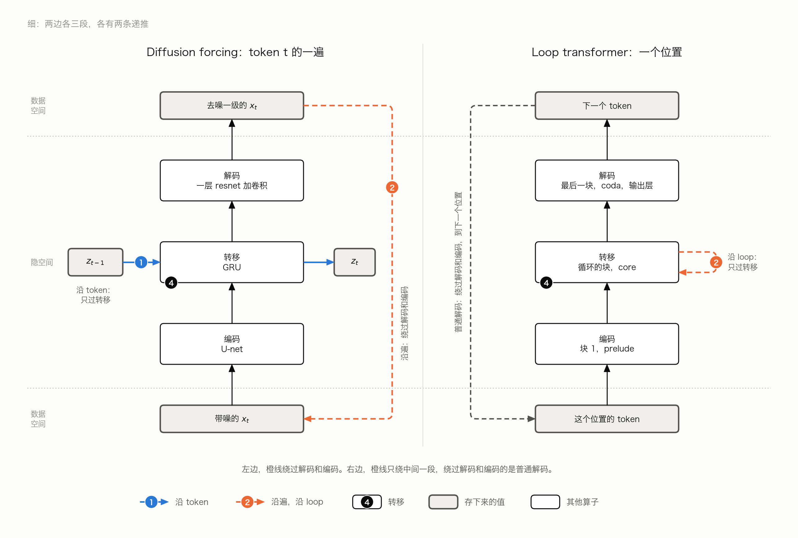
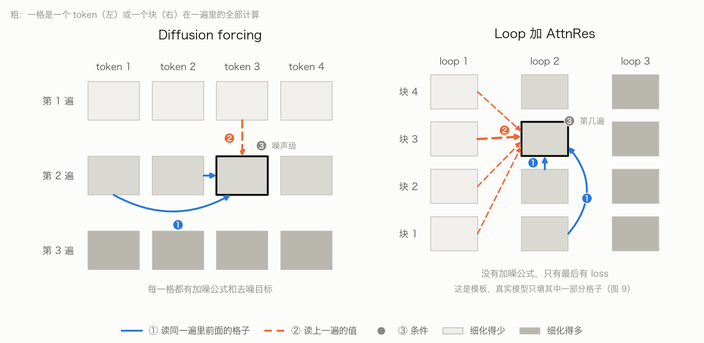
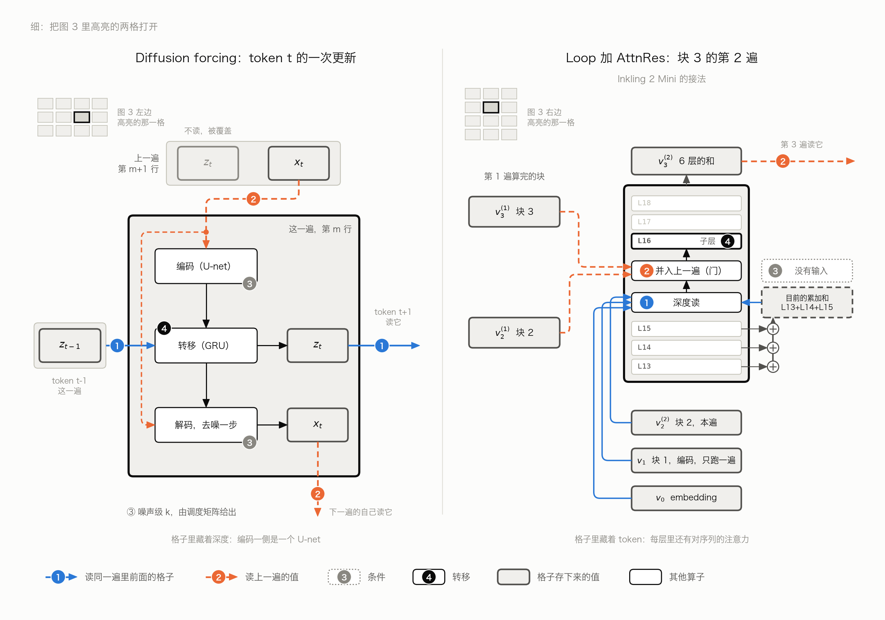
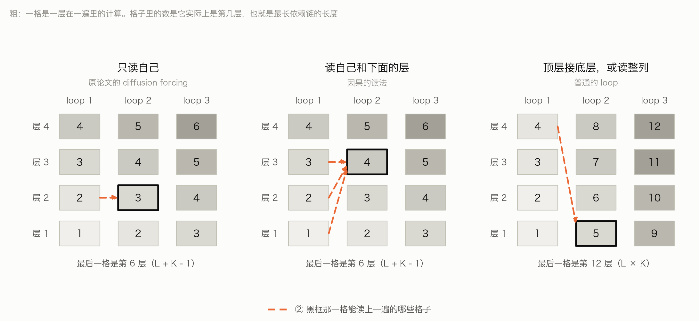
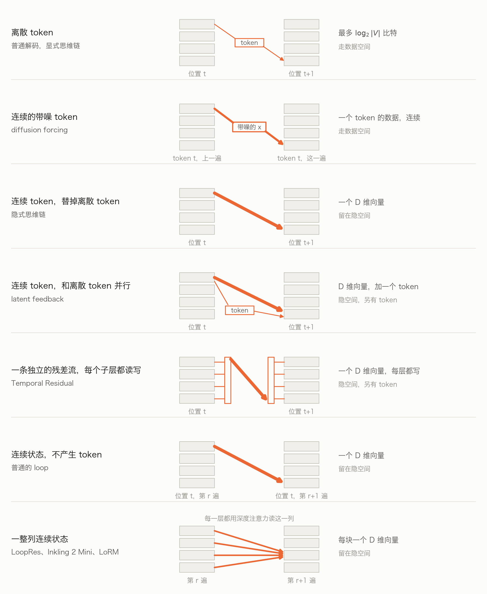
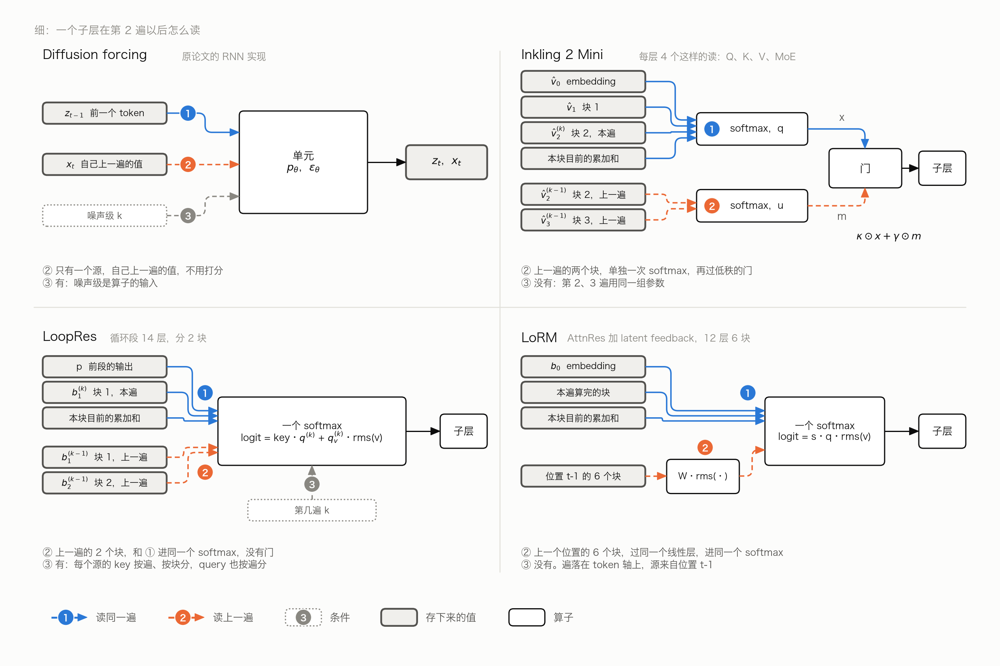
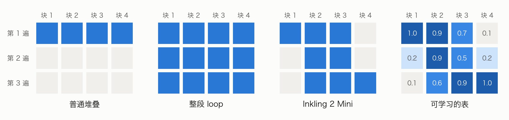

Diffusion Forcing 的对偶：时间轴变成 Attention Residuals，噪声轴变成 Loop Transformer
一个观察：最近的两条架构线，对深度做注意力和让层循环，是同一个对偶的两半。
最近有两条线，看起来没什么关系。
一条在改残差连接。Attention Residuals（下面叫 AttnRes）把层与层之间的相加，换成了对之前各层输出的 softmax 注意力。另一条在做 loop transformer：Huginn、Ouro、Inkling 2 Mini、LoopRes，让同一组层反复跑几遍。
这篇文章想说服你一件事：这两条线是同一个对偶的两半，对偶的另一边是 diffusion forcing。 Diffusion forcing 有两根轴，时间和噪声。把时间轴对偶到网络深度上，得到 AttnRes。把噪声轴对偶过来，得到 loop transformer。
展开来是五句话：
- 两边是同一种三段结构：编码、转移、解码。状态只在中间那段里递推。
- 时间轴对到深度，得到 AttnRes。这一半是严格的。
- 噪声轴对到 loop，有一个条件：每一层读的是自己上一遍的值。如果是顶层接到底层，loop 只是一根更长的深度轴。
- Loop 取的是噪声轴的角色，反复细化同一批格子。它用的却是时间轴的形式，留在隐空间里，只过转移。
- 两边真正的差别只有一处：遍与遍之间走不走数据空间。Diffusion forcing 走，所以它有加噪公式、逐格的目标和任选的 schedule。Loop 不走，这三样都没有。
先说清楚这篇文章是什么。它是一个观察加几条推论，不是一篇论文。能写成严格式子的几处，我用一个小脚本核对过（附录 B）。其余是类比，出现的地方我会标明。文中加框的"假设"是我自己的判断，没有验证过。
图有两种粒度，图注开头会标明。粗图里一格是一个块（或一个 token）在一遍里的全部计算。细图里一行是一层。两种图用同一套编号：① 读同一遍里前面的格子，② 读上一遍的值，③ 条件，④ 转移。
内容按这个顺序走：
- AttnRes 已经做了一步对偶，但只动了一根轴。
- Diffusion forcing 是什么：三段结构，两根轴各管一件事。
- 网络这一侧有同样的三段。
- 把两边对起来：一个式子，一张字典，一个条件。
- 遍与遍之间传什么，走哪里。
- 对偶预言的结构，已经有三个模型造出来了。
- 对偶里还空着的一格：每层自己的 loop 次数。
- 对不上的地方。
1. 已知的一步：AttnRes 把时间上的注意力搬到深度上
从残差连接的式子开始：
\[ h_l = h_{l-1} + f_{l-1}(h_{l-1}) \]记第 \(i\) 层的输出为 \(v_i = f_i(h_i)\)，\(v_0\) 是 embedding。把上式展开，每一层读到的是之前所有层输出的和：
\[ h_l = \sum_{i<l} v_i \]再看线性注意力（或者 RNN）在时间上的状态更新：
\[ S_t = S_{t-1} + k_t v_t^\top \]两个式子做的是同一件事：把之前的全部信息压进一个固定大小的状态。区别只是下标，一个是层号，一个是时间步。
AttnRes 的论文把各种残差连接统一写成一个"深度混合矩阵" \(M\)：
\[ h_l = \sum_{i<l} M_{i\to l}\, v_i \]- 标准残差：\(M_{i\to l} = 1\)。
- Highway、Hyper-Connections：\(M\) 能拆成读的一侧和写的一侧，最简单的情形是 \(M_{i\to l} = \phi(q_l)^\top \phi(k_i)\)。这时求和可以折叠成递推，写的时候 \(S_l = S_{l-1} + \phi(k_l)\, v_l^\top\)，读的时候 \(\phi(q_l)^\top S_l\)。这就是序列一侧"线性注意力等于 RNN"的那个等价，原样搬到了层轴上。
- AttnRes：\(M_{i\to l} = \mathrm{softmax}_i\big(w_l^\top\, \mathrm{RMSNorm}(v_i)\big)\)，\(w_l\) 是每层一个学出来的向量。softmax 拆不开，所以只能把每层的输出留着，随用随取。
| 时间轴 | 深度轴 |
|---|---|
| 时间步 \(t\) | 层号 \(l\) |
| RNN 或线性注意力的状态 | 残差流 |
| 门控和衰减 | Highway |
| softmax 自注意力，加 KV cache | AttnRes，加留下来的层输出 |
序列建模当年用注意力换掉了 RNN。AttnRes 在深度轴上做了同一步。论文把这叫 time–depth duality。
实际的模型用的是按块的版本。层被分成几块，块内各层的输出累加成一个和 \(v_i\)。每个子层的输入是一次 softmax，源有三种：embedding，已经算完的各块，本块目前的累加和。Inkling 2 Mini 的参考实现里，被混合的也是归一化后的值：
\[ x = \sum_j \alpha_j\, \hat v_j, \qquad \alpha_j = \mathrm{softmax}_j\big(q^\top \hat v_j / \sqrt{d}\big), \qquad \hat v = v / \mathrm{RMS}(v) \]

对偶也可以反着走。AttnRes 把注意力从时间搬到深度；把残差流从深度搬到时间，就是最近的 Temporal Residual。它给模型加第二条残差流，每个子层都读写，这条流在一个 token 结束时的值，归一化后成为下一个 token 的初值。论文自己的说法是，这是一条既跨层也跨 token 的残差连接。
这样四个格子就齐了：
| 递推：固定大小的状态 | 注意力：留着随用随取 | |
|---|---|---|
| 深度 | 残差流 | AttnRes |
| 时间 | RNN，Temporal Residual | 自注意力 |
有两处不严格。时间轴上的 query 由内容算出，深度轴上的 \(w_l\) 和输入无关。深度轴的"序列"是网络自己一层层生成的，\(v_l\) 要等前面的层算完才有。
这个对偶只动了一根轴。被对偶的对象是一个序列模型，它本身只有时间这一根轴。如果被对偶的对象有两根轴呢？
2. Diffusion forcing：三段结构，两根轴各管一件事
Diffusion forcing 的想法是让序列里的每个 token 有自己独立的噪声级。训练时每个 token 各自随机取一个噪声级，模型要在"前面的 token 各带各的噪声"这个条件下给当前 token 去噪。两个极端我们都熟悉：
- 所有 token 的噪声级相同，是整序列扩散。
- 前面的 token 全干净，当前 token 全是噪声，是 next-token prediction。
论文把加噪看成一种部分遮挡：噪声级为 0 是没遮，最高一级是全遮。Teacher forcing 沿时间轴遮，扩散沿噪声轴遮，diffusion forcing 两根轴一起用。
一格里的三段
采样时它是一张二维网格，横轴是 token，纵轴是去噪的遍。原论文用 RNN 实现。在它的视频模型里，一个 token 在一遍里要过三段：
| 段 | 做什么 | 论文里的实现 |
|---|---|---|
| 编码 | 把带噪的 \(x_t\) 变成特征 | U-net |
| 转移 | 用特征把 \(z_{t-1}\) 更新成 \(z_t\) | GRU |
| 解码 | 从 \(z_t\) 给出对 \(x_t\) 的预测 | 一层 resnet 加卷积 |
论文把前两段合称 dynamics model，第三段叫 observation model。按它的 Algorithm 2 写成式子：
\[ z_t \leftarrow p_\theta\big(z_{t-1},\; x_t,\; k\big), \qquad x_t \leftarrow \mathrm{step}\big(x_t,\; \epsilon_\theta(z_t, x_t, k),\; k\big) \]\(\mathrm{step}\) 是一步去噪更新。右边的 \(z_{t-1}\) 是这一遍刚算出来的，\(x_t\) 是上一遍留下的。每一格读三样东西，存两样：
- ① 同一遍里前面的 token，经由 \(z_{t-1}\)。它是一个固定大小的状态，所以这一步是递推，不是注意力。
- ② 自己上一遍的值 \(x_t\)。上一遍的 \(z_t\) 不读，直接被覆盖。
- ③ 自己的噪声级 \(k\)，由 schedule 矩阵给出。严格说，转移用的是这一格当前的级别，去噪用的是要降到的级别。
- 存下来的是 \(z_t\) 和 \(x_t\)。\(z_t\) 给同一遍里的下一个 token，\(x_t\) 给下一遍的自己。
沿 token 是滤波，沿遍是扩散
论文自己的说法是，这个模型把两件事合在一起：沿时间轴做贝叶斯滤波，沿噪声轴做扩散。两根轴各管一件事。
- 沿 token。 \(z_t\) 是"看过到目前为止的观测之后的信念"，由 \(z_{t-1}\) 和观测 \(x_t\) 更新出来。论文写明：噪声级为 0 时是后验更新；噪声级最高时观测不带信息，等于先验更新。所以 \(z\) 是由观测算出来的，它不是被细化的对象。
- 沿遍。 被细化的是 \(x\)。加噪过程定义在 \(x\) 上，噪声级是 \(x\) 的属性。观测干净一级，信念就沿 token 重新滤一遍，上一遍的 \(z\) 不用。遍与遍之间的状态只有所有 token 的 \(x\)。
所以一格里穿过两条递推（图 2 左边）。沿 token 的那条只过转移。沿遍的那条绕一整圈：解码出 \(x\)，下一遍再编码进来。
绕这一圈不丢东西，因为遍与遍之间除了 \(x\) 本来就没有别的状态。它换来三样：
- 加噪公式。 任何一格的输入，训练时都能从干净数据一步造出来，不用真的跑到那一格。
- 逐格的目标。 每一格都有去噪损失。论文证明，在适当的条件下，这个损失同时是所有噪声级组合下似然的下界。
- 任选的 schedule。 哪一遍把哪些 token 降到哪一级，由一张 schedule 矩阵决定。训练一次，采样时这张矩阵可以随便换。
典型的走法有三种：
- 整序列扩散：每一遍所有 token 一起降一级。
- 自回归：一个 token 去噪完，再做下一个。
- 两者之间：近处的 token 更干净，远处的更模糊。论文把噪声级读作不确定性，近的未来比远的未来确定。
因果性
论文处理的是时间序列，所以选了因果的结构：token \(t\) 只依赖前面的 token，在哪一遍都是。因果换来的是能一直往后生成、长度不定、过去可以先定下来。
论文的附录还提到另一种做法：用不带因果掩码的 transformer，靠噪声级来控制因果。未来全是噪声时，没有信息漏回过去；未来越干净，模型越不因果。后来的 DFoT 就是这样做的。第 4 节会用到这一点。
3. 网络这一侧：同样的三段
Loop transformer 通常也分三段。Huginn 的论文这样定义：prelude 把输入嵌入隐空间，core 是反复执行、修改状态的那一段，coda 从隐空间解出来，并带着输出层。Inkling 2 Mini 的第 1 块、第 2 和第 3 块、第 4 块，LoopRes 的前 7 层、中间 14 层、之后的层，都是这个分法。
| Diffusion forcing | Loop transformer | |
|---|---|---|
| 编码：数据到状态 | U-net，读带噪的 \(x_t\) | 第一块，prelude |
| ④ 转移：状态到状态 | GRU，读 \(z_{t-1}\) | 循环的块，core |
| 解码：状态到数据 | 一层 resnet 加卷积 | 最后一块，coda，带输出层 |
这个对应有三条依据：
- 编码器的输出每一步都重新注入。 Diffusion forcing 里，编码后的 \(x_t\) 每一步都喂给转移。Huginn 在递推的每一步都把 prelude 的输出重新送进 core。Inkling 2 Mini 和 LoopRes 每一遍都从第一块的输出重新出发。
- 解码器对每一遍都能用。 Goodfire 把最后一块用在中间各遍的状态上，能解出接近最终输出的预测。只用输出层做不到。
- 解码器放在递推外面更好。 Thinking Machines 报告，循环中间 12 层比循环最后 12 层在 28 项评测里 27 项更好。
块就是转移方程。 从一个状态到下一个状态，两边都是调用一整段网络。细到子层也成立：一个子层读 ① 和 ②，算出输出，加进累加和，这就是一次转移（第 4 节）。一个块是 12 个子层的转移接起来，和 RNN 走 12 步可以看成走一大步是一回事。
有一处是反的：深度放在哪。Diffusion forcing 的视频模型把深度放在编码一侧，转移只是一个 GRU。Loop transformer 把深度放在转移一侧。
网络这一侧也有两条递推
- 沿 loop。 只过 core，第一块和最后一块在外面。状态一直留在隐空间。
- 沿 token 的解码。 顶层的状态过 coda 变成一个 token，再从底层送回去。这是普通的自回归解码，第 5 节还会回到它。


把两边的两条递推并在一起，是一张交叉的表：
| Diffusion forcing | Loop transformer | |
|---|---|---|
| 只过转移，留在隐空间 | 沿 token | 沿 loop |
| 绕过解码和编码，走数据空间 | 沿遍 | 沿 token 的解码 |
按"递推走哪里"来配，loop 像 diffusion forcing 的 token 轴。下一节按"递推在做什么"来配，loop 像它的噪声轴。两种配法不一样，这是整篇文章最需要说清的一点。
4. 把两边对起来
一个式子和一张字典
先只看连线，把每一格当黑盒。设 \(u_{i,k}\) 是第 \(i\) 个格子在第 \(k\) 遍之后的状态，两边可以写进同一个式子：
\[ u_{i,k} = F_i\Big(\;\underbrace{\sum_{j<i} A^{\mathrm{same}}_{j\to i}\, u_{j,k}}_{\text{同一遍里前面的格子}},\;\; \underbrace{\sum_{j} A^{\mathrm{prev}}_{j\to i}\, u_{j,k-1}}_{\text{上一遍的值}},\;\; c_{i,k}\Big) \]| 符号 | Diffusion forcing | Loop 加 AttnRes |
|---|---|---|
| \(i\) | token | 块 |
| \(k\) | 去噪的遍 | loop |
| \(u\)，格子存下来的值 | \(z_t\) 和 \(x_t\) | 块的累加和 \(v_i\) |
| ① \(A^{\mathrm{same}}\) | 读前一个 token 的 \(z\) | 块 AttnRes |
| ② \(A^{\mathrm{prev}}\) | 只读自己上一遍的 \(x\) | 读上一 loop 的一列累加和 |
| ③ \(c\) | 噪声级 | loop 的序号 |
| ④ \(F\)，转移方程 | 所有 token 共享 | 块里的各层，每个块各有权重 |
两个求和分开写是最简单的情形。LoopRes 和 LoRM 把两类源放进同一个 softmax（第 6 节），那时两个求和共用一个归一化，式子的形状不变。


我用一段通用代码实现了上面的式子，换一组读函数，它分别复现了 diffusion forcing 的采样（按论文的 Algorithm 2 写）和一个 loop 加 AttnRes 的网络，数值完全相同。再把三处差别抹掉，两边就是同一个函数：
- \(F\) 沿 \(i\) 共享。Diffusion forcing 的所有 token 用同一个网络，这边每层的权重不同。
- 同一遍里怎么读，也就是 ①。
- 上一遍读谁，也就是 ②。
所以在连线这一级，这个对偶离"恒等"差的东西是数得出来的。第 2 条和第 3 条下面各说一段，它们正好是时间轴和噪声轴。
把格子打开
打开以后，两边的格子做的是同一件事：读 ①②③，过一次转移 ④，写下新的值。


粗图里的每个记号，在细图里各是什么：
| 粗图里的记号 | Diffusion forcing | Inkling 2 Mini |
|---|---|---|
| 一格 | 一次 RNN 单元的调用 | 一个块的 6 层，12 个子层 |
| 格子的值 \(u\) | \(z_t\) 和 \(x_t\) | 6 层输出的和 \(v_i\) |
| 一条 ① 的箭头 | 一次读，读 \(z_{t-1}\) | 每个子层输入各读一次。一个循环的块里有 14 个这样的读取器，每个对所有的源做一次 softmax |
| 一条 ② 的箭头 | 一次读，读 \(x_t\)，没有权重 | 每层 4 个 message，分别给 Q、K、V 和 MoE 的输入。一个块 24 个，每个对上一遍的两个块做一次 softmax |
| ① 和 ② 怎么合 | 一起送进单元 | 低秩的门，\(x' = \kappa \odot x + \gamma \odot m\)，每个 message 一个 |
| ③ | 噪声级，算子的输入 | 没有输入。第 1 遍没有 message，第 2、3 遍用同一组参数 |
| ④ 转移 | GRU：算出新的 \(z_t\) | 一个子层：算出输出，加进累加和。一个块是 12 个这样的转移接起来 |
| 格子里藏着的轴 | 深度：编码一侧是一个 U-net | token：每层里还有对序列的注意力，每一遍各存一份 KV |
粗图里的一条箭头，在细图里是一束读，它们读的是同一个源。Goodfire 数过整个模型：深度方向 56 个读取器，跨遍 48 个。
这一束读可以写成一个式子。子层 \(i\) 的输入展开后，是对更早的子层输出 \(o_j\) 的加权和，同一个块里的子层共用一个权重（embedding 算作第 0 个源）：
\[ x_i = \sum_{j<i} \frac{\alpha_{b(j)}}{\mathrm{RMS}\big(v_{b(j)}\big)}\; o_j \]这里 \(b(j)\) 是子层 \(j\) 所在的块。这就是把格子取成子层时的 \(A^{\mathrm{same}}\)，\(A^{\mathrm{prev}}\) 同理。Goodfire 用这个展开追踪信息流。我用一个小网络核对过：按参考实现的写法去算（块的累加和，每遍从块 1 的状态重新出发，message 经门并入），结果和把格子取成子层的网格递推完全相同（附录 B 的 E1）。
所以两级的关系是：网格递推在子层这一级是精确的，一个子层就是一次转移。块这一级的图把一个块的子层画成一格，一条箭头代表一束共用权重的读。
时间轴对到深度：同一遍里怎么读
第 1 节的四格表说，读前面的格子有递推和注意力两种做法。两边各有这两种：
| Diffusion forcing 的实现 | 同一遍里怎么读前面的 token | 对到深度上 |
|---|---|---|
| RNN，原论文 | 递推，一个固定大小的 \(z\) | 残差流 |
| 因果 transformer，比如 CausVid | 注意力，前面的 token 留着随用随取 | AttnRes |
这一半就是第 1 节的 time–depth duality，它是严格的。
噪声轴对到 loop：上一遍读谁
这一半有条件。问题是第 \(k\) 遍的第 \(i\) 层能读上一遍的哪些层。
| 上一遍读谁 | Diffusion forcing 一侧 | 第 2 遍的第 1 层是什么 | 最后一格是第几层 |
|---|---|---|---|
| 只读自己 | 原论文 | 还是第 1 层，再细化一次 | \(L + K - 1\) |
| 读自己和下面的层 | 因果 transformer | 同上 | \(L + K - 1\) |
| 顶层接底层，或者读整列 | 整序列扩散 | 第 \(L+1\) 层 | \(L \times K\) |
"第几层"指最长依赖链上的层数，\(L\) 是层数，\(K\) 是遍数。按 Inkling 2 Mini 的结构算，前两种是 36 层，第三种是 48 层。


这张图回答的是 loop 算不算一根独立的轴。
如果第 2 遍的第 1 层接的是第 1 遍的最后一层，整个网络可以读成一根更长的深度轴，折成几行写。这时只需要 AttnRes 那半个对偶，权重沿深度周期重复而已，噪声轴没有东西可对。Huginn 就是这种接法。只有当每一层读的是自己上一遍的值，"同一层被细化了几次"才有意义，噪声轴才落得下来。
因果也不必是一张掩码。第 2 节末尾说过，diffusion forcing 可以用不带掩码的结构，靠噪声级控制因果。对过来是：下面的层能从上面的层的上一遍读到多少，可以由一个门来控制。Inkling 2 Mini 的门一开始完全关着，模型从纯因果出发，再自己学放开多少。这是我的读法。
Diffusion forcing 要因果的理由搬不过来。Token 是先后到来的不同东西，后面的还不存在。层是对同一个 token 的逐级加工，顶层的结论对底层确实有用，没有"不许看"的理由。搬得过来的是因果的好处和代价，第 7 节用得上：
- 好处：低层的输入一旦稳定，它就不用再算，跳过是精确的。
- 代价：每多一遍只多一步串行深度，不因果时多一整段。
两种配法
到这里可以把第 3 节末尾那句话说完。
- 按角色配。 噪声轴和 loop 做的是同一件事：反复细化同一批格子。遍对 loop。
- 按形式配。 Loop 的递推留在隐空间，只过转移，这是 diffusion forcing 沿 token 那条递推的样子。它的遍每次都回数据空间，在网络这一侧像的是普通解码。
观察 1. Loop 取了噪声轴的角色，用的是时间轴的形式。在连线上，AttnRes 乘以 loop 是 diffusion forcing 的网格转了 90 度：块内的深度注意力是它的时间轴，loop 之间的连接是它的噪声轴。两边的差别是遍与遍之间走不走数据空间。
三种 schedule 也各有对应：
| Diffusion forcing | 网络 |
|---|---|
| 自回归：一个 token 去噪完再做下一个 | 一层算完再算下一层。普通堆叠是每层只算一次的特例 |
| 整序列扩散：每遍所有 token 一起更新 | 整段 loop：每次 loop 所有层一起更新 |
| 独立噪声级，采样时任选 schedule | 每层有自己的 loop 次数（第 7 节） |
前两行在 loop transformer 的文献里有名字，叫 per-layer looping 和 full-stack looping。
5. 遍与遍之间传什么，走哪里
上一节留下一处差别：遍与遍之间走不走数据空间。这一节把它放进一把梯子里看。
普通解码已经是一条回路
Full-bandwidth Transformer 的论文是这么起头的：自回归模型沿两根轴计算，横向是 token，纵向是深度。逐 token 解码本身就是一条回路，顶层的状态被采样成一个 token，再从底层送回去。思维链靠的就是这条回路，推理的深度随生成的 token 数增长。
但这条回路很窄。一个 \(D\) 维的向量被压成一个符号，最多 \(\log_2 \lvert V \rvert\) 比特。
所以普通的自回归模型已经有"遍"，只是遍与遍之间传的东西很少。按"传什么、走哪里"排下来，是一把梯子：
| 遍与遍之间传什么 | 走哪里 | 代表 |
|---|---|---|
| 一个离散 token | 数据空间，过一次离散化 | 普通解码，显式思维链 |
| 一个连续的带噪 token | 数据空间，不离散化 | diffusion forcing |
| 一个连续 token，替掉离散 token | 隐空间 | 隐式思维链（Coconut），CoTFormer |
| 一个连续 token，和离散 token 并行 | 隐空间，另有 token | latent feedback |
| 一条独立的残差流，每个子层都读写 | 隐空间，另有 token | Temporal Residual |
| 一个连续状态，不产生 token | 隐空间 | 普通的 loop |
| 一整列连续状态，每块一个 | 隐空间，用深度注意力读 | LoopRes、Inkling 2 Mini、LoRM（第 6 节） |


沿着梯子往下，遍与遍之间传得越多，需要写出来的就越少。有两组数字：
- Loop 的遍数。 Thinking Machines 放出了一个遍数可调的研究模型。在 GPQA 上它每种遍数都答对的那些题，1 遍时平均写 3703 个推理 token，3 遍 1731 个，5 遍 1661 个，句子长度和用词没有变化。
- Latent feedback。 Temporal Residual 改装后的模型，解题写的 token 少 9% 到 16%。把一部分推理换成填充 token 再训练，它在不写任何推理的情况下，GSM8K 的准确率从 21% 升到 40%；把带过去的状态清零，增益就没了。不带这条流的模型同样训练，填充 token 没有用。
所以离散的回路和连续的回路可以互相替代。这也是它对监控重要的原因：推理可以不出现在文字里。
走数据空间换来什么
Diffusion forcing 在梯子的第二级。它每一遍都回数据空间，但图像的数据空间是连续的，回去不丢东西。语言的数据空间是离散的，回一次只剩一个符号，所以语言模型想多传，只能留在隐空间。
第 2 节说过，回数据空间换来的是训练信号：加噪公式、逐格的目标、任选的 schedule。不回像素空间的做法，按能保住多少排下来：
| 做法 | 遍与遍之间带什么 | 加噪公式 | 逐遍的目标 |
|---|---|---|---|
| 把扩散整个搬进一个隐空间：编码一次，在里面多遍，解码一次 | 带噪的隐变量 | 有 | 有 |
| 只解码、不送回：最后的状态过 coda 算 loss，遍数随机取 | 隐状态 | 没有 | 有 |
| 直接带隐状态 | 隐状态 | 没有 | 没有，只有最后的 loss |
第一行已经有人做。CausVid 在 3D VAE 的隐空间里做 diffusion forcing，结构是因果的，每个片段独立取噪声级。DFoT 也在 VAE 的隐空间里做，但不因果。这种做法其实没有离开"数据空间"，只是把数据空间换成了一个连续的隐空间，所以三样东西都保得住。
第二行是随机遍数的训练。Huginn 给每条序列随机取迭代次数，只对最后 8 次反传，loss 算在最后一次迭代过 coda 之后的输出上。TML-d24-varloop-research 的遍数从 1 到 5 里取。这样每种遍数下的状态都被解码并监督过。
第三行是固定遍数的 loop transformer。
Loop 和 latent feedback 是同一个递推的两种跑法
Latent feedback 把上一个位置的顶层状态送回下一个位置的输入：
\[ h_t = f\big(e_t,\; h_{t-1}\big) \]这里 \(e_t\) 是第 \(t\) 个 token 的 embedding，\(f\) 是整叠层，它还会通过注意力读前面位置的状态。这样每来一个新 token，隐藏状态就被再细化一遍，解码时不用多跑。
上面是最简单的形式。Temporal Residual 把这条回路做成一条独立的残差流 \(B\)，和原来的残差流 \(A\) 并排：
\[ u = r_A A + r_B B, \qquad y = f(u), \qquad A \leftarrow A + y, \qquad B \leftarrow B + s_B\, y \]每个子层有自己的读权重 \(r_B\) 和写强度 \(s_B\)，\(B\) 在最后一层的值归一化后带到下一个 token。\(r_B\) 的初值是 0，所以改装后的模型一开始就是原模型。从哪一层取、送到哪一层，不用设计，由训练决定。解码是精确的逐 token 递推，每个序列只多存一个向量。
Loop 是在同一个位置上反复算。Latent feedback 是把同一条回路摊到 token 轴上。噪声级在 loop transformer 里是 loop 的次数，在带 latent feedback 的 transformer 里就是序列位置。对不带反馈的普通 transformer，这句话不成立：新 token 带来的是新信息，不是对同一个状态的细化。
"遍"是什么：一个三角方程组的 Jacobi 迭代
逐 token 解码是前向代入，结果是精确的。训练时不能逐 token 跑，于是并行跑几遍，每一遍用上一遍的值：
\[ h_t^{(p)} = f\big(e_t,\; h_{t-1}^{(p-1)}\big), \qquad h^{(0)} = 0 \]这是对一个下三角方程组做 Jacobi 迭代，精确的递推是它的不动点。Temporal Residual 的论文就是这样表述的。对 \(p\) 归纳就能看出它收敛得多快：位置 1 没有前驱，第 1 遍后就是精确的；位置 \(t\) 只依赖位置 \(t-1\) 及更早的位置在上一遍的状态，所以 \(t \le p\) 的位置在第 \(p\) 遍后都是精确的。

实际远不用跑满。Full-bandwidth Transformer 报告 3 到 4 遍后 KV 的相对误差约 1%。IFM 的 latent feedback transformer（代码库叫 LoRM）直接用 4 遍当作逐 token 解码。但这不是白来的：前者发现只用一遍和两遍的 batch 训练时，递推滚过训练深度就会发散，混入 3% 的三遍 batch 才稳定下来。
少跑几遍够不够，取决于怎么训。Temporal Residual 比了八种训法。只用两遍训的模型，两遍时 loss 最低，八遍时最差，逐 token 解码的准确率和不带反馈的模型一样。跑六遍、只对最后两遍反传，loss 在三遍到八遍之间只差 0.0001。作者的解释是，截断反传让每一遍学的是：不管拿到什么状态，都把它变好一点。按我的读法，这正是一个去噪器该有的性质，在任何噪声级上都能往前走一步。
训练用整序列并行的遍，解码用自回归。这正是 diffusion forcing 的"训练一次，采样时换 schedule"，已经有人在用了。
对偶在这里多给了什么
- 传的不该只是一个 token，而是一列。 对偶里被去噪的是整条序列，对过来是所有层的输出。隐式思维链和只送顶层的 latent feedback 只传了最后一个。
- 两半在这里接上。 这一列连续状态是沿深度排开的一条序列，读它的就是 AttnRes。
假设 1. 遍与遍之间应该传一整列层输出，用深度注意力去读，而不是只传顶层的一个向量。
有两点要守住。隐式思维链的目的不同，它要替代的是显式的推理步骤，用在需要搜索和规划的推理任务上。这里只借"连续 token"这个说法，不引它的结果。另外"隐式 token"不是对所有接法都严格：Huginn 式的 loop 会覆盖上一遍的 KV，后面的位置读不到中间那几遍，每一遍都留下可读 token 的是 CoTFormer 那种接法。
6. 对偶预言的结构，已经有人造出来了
按对偶，一个网络应该有四样东西：
- 三段结构，每一遍从编码器的输出重新出发。
- 一遍之内，用深度注意力读前面的层。
- 遍与遍之间有一条连接，读上一遍的一列输出。
- 告诉读取方这是第几遍。Diffusion forcing 是把噪声级作为输入的。
过去几个月里有三个模型做了前三样，其中一个做了第四样。
Inkling 2 Mini（Thinking Machines，11 月 20 日）有 24 层，分成 4 个块，每块 6 层。第 1 块跑一遍，第 2、3 块 loop 三遍，第 4 块跑一遍。块内用 AttnRes。每一遍都从第 1 块算完的状态重新出发，上一遍的结果只从一条路进来：每个子层输入对上一遍的第 2、3 块做一次深度注意力，得到一个 message，再经过一个低秩的门混进去。门一开始把 message 完全挡住，所以训练是从不循环的模型出发的。
LoopRes（NUS）在预训练的 Qwen3-1.7B 上微调出 loop。按公开的配置，前 7 层照常跑一遍，中间 14 层分成 2 个块循环 3 遍，之后的层再跑一遍。循环段的每个子层读一次 softmax，源是：前段的输出，上一遍的 2 个块，本遍算完的块，本块目前的累加和。同一遍的源和上一遍的源在同一个 softmax 里，没有门。打分有两项，一项看内容，一项不看：每个源带一个训练出来的 key，按遍、按块分；每个子层的 query 也按遍分。
LoRM 的 AttnRes 加 latent feedback（IFM，只有代码）是 134M 的模型，12 层，每 2 层一块。它的遍落在 token 轴上：上一个位置的 6 个块，归一化后过同一个线性层，作为额外的源放进每一次深度读取，和本遍的源在同一个 softmax 里。各遍的参数相同。


| Diffusion forcing | 对偶 | Inkling 2 Mini | LoopRes | LoRM |
|---|---|---|---|---|
| 编码、转移、解码 | 三段，每遍从编码器的输出出发 | 是 | 是 | 是，遍在 token 轴上 |
| ① 同一遍里读前面的 token | 同一遍里读前面的层 | 块 AttnRes | 块 AttnRes | 块 AttnRes |
| ② 读自己上一遍的值 | 读上一遍的一列输出 | 上一遍的 2 个块，单独一次 softmax，经门并入 | 上一遍的 2 个块，和 ① 进同一个 softmax | 上一个位置的 6 个块，过线性层后和 ① 进同一个 softmax |
| 只读自己，因果 | 上一遍读谁，学出来的 | 块 3 读自己，块 2 读上一遍的块 3 | 第一个块读自己，第二个块读本遍的第一个块 | 前 8 层读上一遍的第 5 到 10 层 |
| 遍落在哪 | 同一个位置，3 遍 | 同一个位置 | token 轴，解码不加遍 | |
| 只依赖上一遍 | 只看上一遍 | 是 | 是，窗口为 1 时最好 | 是 |
| ③ 噪声级作为输入 | 告诉读取方这是第几遍 | 没有，第 2、3 遍参数相同 | 有，key 按遍按块分，query 按遍分 | 没有，各遍参数相同 |
| 每个 token 独立的噪声级 | 每层自己的 loop 次数 | 没有。固定 3 遍，研究版整段一起变 | 没有，固定 | 没有 |
三家都没有保留普通 loop 那条"拿上一遍的顶层状态接着算"的线。每一遍从前段的输出重新出发，上一遍只通过深度读进来。所以骨架是因果的，上面的层怎么影响下面的层，全看这条读学成什么样。
LoopRes 和 LoRM 把两类源放进一个 softmax，网格递推里的两个求和就共用一个归一化。LoopRes 的打分还依赖遍号，所以 ③ 进到了读的里面。这两点我也核对过（附录 B 的 E2）。
有三点值得看。
上一遍读谁，各家学出来的不一样。 Goodfire 分解了 Inkling 2 Mini 每一层的输入，发现后面的 loop 读上一遍时，读第 3 块多于第 2 块。第 3 块几乎总是读自己上一 loop 的输出，这是"读自己上一遍的值"。第 2 块开头的层读的也主要是上一遍的第 3 块，也就是上一遍的顶部，这是"更深一层"的读法。LoopRes 的分析相反：循环段的第一个块主要在更新自己上一 loop 的输出，第二个块主要依赖本 loop 的第一个块，两个都是因果的读法。LoRM 的第二遍读的是第一遍的第 5 到 10 层，不是顶层，而且只在自己的前 8 层读。Temporal Residual 让每个子层自己学读写的权重，学出来也集中在中间：32 层里读的权重在第 15 层最高，写的强度从第 20 层往上不到 0.1，最上面三分之一的层几乎不写。所以没有一家是纯因果的，也没有一家是纯"顶层接底层"的。
增益主要来自跨遍的深度读取。 LoopRes 在 Qwen3-1.7B、两倍算力下，7 项评测的平均分是：Huginn 式的 loop 49.0，加上朴素的 AttnRes 53.9，LoopRes 55.8。LoRM 在相同训练算力下的验证 loss：
| 模型 | loss |
|---|---|
| Transformer | 2.4690 |
| Transformer 加 AttnRes | 2.4354 |
| Latent feedback 加 AttnRes，只送回顶层 | 2.4443 |
| Latent feedback 加 AttnRes，送回 6 个块 | 2.4319 |
只送回顶层不如不送，送回一整列才有收益。这一档的差距只有 0.004，数据多四倍的那一档是 0.017（2.3390 对 2.3556）。Temporal Residual 在改装预训练模型的设置里有一个同方向的结果：把上一个 token 的顶层状态直接送进输入，只拿到它五分之一的增益。这两条是假设 1 目前的证据，都是他们报告的数字。后一条没有用深度注意力，只说明只送顶层不够。
读取方要被告知级别。 LoopRes 发现靠内容分不开同一个块的各次迭代，直接优化的、按 loop 分的 key 才分得开。去掉它，四倍算力下的平均分从 57.8 掉到 55.8。
Inkling 2 Mini 没有按遍分的参数，但 Goodfire 发现模型自己长出了一个：坐标 \(d_{2027}\) 在前两遍的末尾被写成很大的正值，RMS 归一化后平均 +32.4，一个坐标占了平方范数的 46%；到最后一遍又被清掉。它是下一遍决定"读第 3 块还是第 2 块"时贡献最大的几个坐标之一。Goodfire 的推测是最后一遍之后不再需要跨 loop 通信，所以模型把它抹掉。按我的读法，没人给它级别信号，它就自己腾出一个坐标来记。
假设 2. 读取方分不清一个源被细化到了什么程度，必须被告知。LoopRes 按 loop 分的 key 和 Inkling 2 Mini 自己长出来的 \(d_{2027}\) 是同一件事。
系统侧也是同一个问题
遍与遍之间的连接，是沿细化轴的顺序依赖。它在两边带来同一个麻烦，解法也是同一类。
- Loop 模型：Geiping 等人给 3.5B 的 loop 模型做了并行采样器，不等一个位置的循环收敛就起草下一个 token，后面的遍同时精修多个位置。
- Latent feedback：speculative decoding 要并行验证一串草稿，但每个位置需要的反馈状态还在算。Feedback Shortcut 先用 MTP head 的状态当替身做验证，下一次调用再纠正，作者说解码快 2.4 到 2.8 倍。
两边都是先读一个还没细化完的值，之后再修。这也正是 diffusion forcing 本来就允许的事：读还没去噪完的历史。
7. 还空着的一格：每层自己的 loop 次数
上一节的表里，最后一行三个模型都是"没有"。而这一行正是 diffusion forcing 名字的来历：训练时每个 token 有独立的噪声级。对偶过来，是每一层有自己的更新次数。
最接近的是 Thinking Machines 和 Inkling 2 Mini 一起放出的研究模型 TML-d24-varloop-research。它的中间 12 层在训练时跑 1 到 5 遍，按 1:2:6:2:1 采样，推理时遍数可以自己选。这相当于训练时随机取噪声级，但所有 token 取同一个。Huginn 更早做过同样的事。还空着的是每一层取各自的次数。
执行表
用第 4 节的记号，再加一张表 \(S_{k,i} \in \{0,1\}\)，表示第 \(k\) 遍里第 \(i\) 个格子是否更新。Diffusion forcing 的 schedule 矩阵和"哪一遍跑哪些层"是同一个对象。现有的架构各是一张填好的表：


我核对过带执行表的式子：按 Inkling 2 Mini 那张表去跑，结果和直接写"前段一遍、中段三遍、后段一遍"的前向完全相同。
一个反对意见
每层跑几次，模型设计的时候就定了。想让某一段多算，就把它放进循环的那一段，或者干脆多堆几层。Inkling 2 Mini 的"1、3、3、1"本身就是一张逐块的次数表。
这张表怎么填是有差别的。Thinking Machines 报告，循环中间 12 层比循环最后 12 层在 28 项评测里 27 项更好。折算成算力，不循环的模型要多花 1.51 到 1.91 倍才追得上前者，追上后者只要 1.24 到 1.36 倍。
反过来问：既然一张固定的表有效，不同的表又有差别，这张表为什么要人来填？能不能做成可学习的参数或者结构？
已经有人在学这张表，但只学了一半
| 工作 | 学什么 | 摘要里的结果 |
|---|---|---|
| CoLa | 每个样本一条路线，层可以跳过或重复，用 MCTS 搜 | 原本答对的样本 75% 以上有更短的路线，原本答错的 60% 以上能找到答对的路线 |
| PoLar | 用一个小网络预测每个输入的路线 | 数学推理上更准，常常还少跑几层 |
| Dr.LLM | 每层一个 router，选跳过、执行或重复 | 最多 +3.4 个点，平均每题少跑 5 层 |
| MACRO | 每个任务一条静态路线 | 平均 +5.0% |
这四个都在冻结的普通预训练模型上做，权重不动。它们碰到的限制很一致：
- 模型对改路线不鲁棒。 失败的路线会把残差流推到后面的层没见过的分布上。
- 门和权重一起学会把轨迹带坏。 在 Ouro 上的诊断是，学出来的退出门不如先用固定的先验把每个深度都监督好，事后再读置信度。
- 放开读的自由会塌到捷径。 LoopRes 的朴素 AttnRes 版在 7 个 loop 时，经过每个 loop 的那条路径只剩 0.05% 的权重。
这些说的是同一件事：权重只在一张执行表下训练过，换一张表就出了分布。
Diffusion forcing 给的正是这个问题的解法。训练时让表随机，每个 token 独立取噪声级，并把级别告诉模型；采样时再选表。对偶过来是两步：
- 先训权重。 每个块的更新次数独立随机，并告诉读取方每个源被更新过几次。这样任何一张表都在训练分布之内。
- 再学表。 权重定下来之后再搜或者学，不和权重一起学。
Loop 这一侧没有加噪公式，也没有逐格的目标（第 5 节），所以这两样要找替代：
- 加噪公式的替代是真的少跑几遍。 "少更新两次的层输出"造不出来，只能按随机的表去执行。
- 逐格目标的替代是 coda。 每种表下最后的状态都过一次 coda，算一次 loss。
因果性在这里也有份（第 4 节）。跳过一层只有在它的输入不再变化时才是精确的。下面的层如果读上面的层的上一遍，它的输入每一遍都在变，跳过任何一层都改了函数。只读自己和下面的层时，低层的输入会先稳定下来，表就有一个自然的形状：低层先停，高层多跑。这对应 diffusion forcing 里近处先定、远处后定的走法。
假设 3. 执行表要可学习，权重得先在随机的表下训过。先训权重，再学表。随机的表对因果的那部分读是安全的；自上而下的那部分读要单独用门控住。
对服务来说，三种"可学习"的代价差得很远：
- 每个算力档一张静态的表：没有额外代价。支持 Inkling 2 Mini 的几个推理框架里，遍数是启动时的常量，前向就是按一张固定的层访问表走的。
- 按请求选表：要按表分 batch，每张表一份 CUDA graph。
- 按 token 选表：后面的位置会读到没算过的 KV。
假设 4. 最先落地的会是每个算力档一张静态的表。
还没做的实验
用一个小的 AttnRes 语言模型，4 层、3 个 loop、权重跨 loop 共享，训三个：固定的表，整体随机的遍数，逐层独立随机并告知次数。然后在每个模型上枚举几百张表。
我想看三件事。同样 8 次层更新，逐层随机的模型上最好的那张表，比整体随机的模型跑两遍好不好。逐层随机的模型跑满时，比固定表的模型差多少。固定表的模型换到非均匀的表时，是不是退化得比逐层随机的模型厉害。
这个实验我还没跑。即使结果是正面的，几千万参数的小模型也只能说明机制，说明不了大模型上的收益。
8. 对不上的地方
- 根源只有一个：遍与遍之间不回数据空间。 所以 loop 这一侧没有加噪公式，没有逐格的目标，schedule 也只能靠真跑来换。目前没有定理说多 loop 一次等于去噪一步。"噪声级对应更新次数"是类比。
- 一座可能的桥。 把 loop 看成不动点迭代，用到不动点的距离当噪声级。它是单调的，但不是一个分布。Huginn 的 loop 就是从一个高斯噪声的状态出发的。训练出来的递推收不收缩要看训法：varloop 模型最多训到 5 遍，跑 10 遍没有明显变差；Temporal Residual 用截断反传训出来的模型，loss 在 3 到 8 遍之间几乎不变；第 5 节里只用一两遍训的例子则会发散。
- 因果的理由搬不过来。 Diffusion forcing 因为 token 先后到来而因果。层之间没有这个理由，现有的模型也都留了一条自上而下的读。
- 权重不沿深度共享。 Diffusion forcing 的所有 token 用同一个网络，这边每层的权重不同。
- 深度放的位置相反。 Diffusion forcing 的视频模型把深度放在编码一侧，loop transformer 放在转移一侧。
- 遍数差一个量级。 扩散有几十到上百个噪声级，现在的 loop 只有几遍。
- 两张格点图各藏了一根轴。 Diffusion forcing 的图藏了深度。Loop 的图藏了 token：每层里还有对序列的注意力，真实的 token 带来新信息。把 loop 和 token 都算作时间，只在带 latent feedback 时才严格。
9. 结尾
回到开头的问题：这两条线有没有关系。
观察 2. 现有的 loop 模型，在连线上已经是 diffusion forcing 网格的转置。三段结构相同，块内的 AttnRes 是它的时间轴，遍与遍之间那一列连续状态担的是噪声轴的角色。它们没有的是回数据空间的那一圈，以及跟着来的加噪公式和逐格目标。训练时也只用了一张执行表。
假设 5. Diffusion forcing 从"所有 token 同一个噪声级"走到"每个 token 独立"，得到的是采样时任选 schedule 的自由。Loop 模型下一步会走同一段路：从一张设计时填好的执行表，走到在随机的表下训练、事后再选表。
Inkling 2 Mini 是 Thinking Machines 自己训练的产品模型，LoopRes 是在预训练模型上微调，LoRM 是在研究 latent feedback。三家的出发点不同，却造出了几乎同一个结构。我愿意把这当作这个对偶不只是巧合的一点证据。
附录 A：记号
| 记号 | 含义 |
|---|---|
| \(v_i\) | 第 \(i\) 层（或块）的输出，\(v_0\) 是 embedding。按块时是块内各层输出的和，\(v_i^{(k)}\) 是第 \(k\) 遍的值 |
| \(\hat v\) | \(v / \mathrm{RMS}(v)\) |
| \(o_j\) | 子层 \(j\) 的输出 |
| \(\alpha\)、\(\beta\) | 深度读和跨遍读的 softmax 权重 |
| \(\kappa\)、\(\gamma\) | 把 message 并进输入的门 |
| \(z_t\)、\(x_t\) | diffusion forcing 里 token \(t\) 的隐状态和带噪的值 |
| ①②③④ | 读同一遍、读上一遍、条件、转移。粗图和细图共用 |
| \(M_{i\to l}\) | 深度混合矩阵，第 \(l\) 层读第 \(i\) 层输出的权重 |
| \(u_{i,k}\) | 第 \(i\) 个格子在第 \(k\) 遍后的状态 |
| \(A^{\mathrm{same}}\)、\(A^{\mathrm{prev}}\) | 读同一遍里前面的格子、读上一遍的格子 |
| \(c_{i,k}\) | 条件：噪声级，或者 loop 的序号 |
| \(S_{k,i}\) | 执行表，第 \(k\) 遍里第 \(i\) 个格子是否更新 |
| \(L\)、\(K\) | 层数和遍数 |
| \(h_t^{(p)}\) | 并行第 \(p\) 遍后位置 \(t\) 的顶层状态 |
附录 B：核对过的式子
check_identities.py 只依赖 numpy，几秒钟跑完：
uv run --with numpy python check_identities.py
| 核对项 | 内容 | 最大误差 |
|---|---|---|
| A1 | 通用的网格递推复现 diffusion forcing 的采样，按论文的 Algorithm 2，金字塔 schedule | 0 |
| A2 | 同一段代码复现 loop 加 AttnRes 的网络 | 0 |
| A3 | 抹掉三处差别后，loop 网络等于那个采样器 | 0 |
| B | 带执行表的递推复现"前段一遍、中段三遍、后段一遍" | 0 |
| C | 并行 \(p\) 遍后，位置 \(t \le p\) 等于逐 token 解码 | 3e-14 |
| D1 | 可分的深度核等于固定大小状态的递推 | 7e-15 |
| D2 | 零初始化时 AttnRes 过了 RMSNorm 等于 PreNorm 残差 | 2e-12 |
| E1 | 按 Inkling 2 Mini 参考实现的写法（子层、块的累加和、每遍重新出发、message 经门并入），等于把格子取成子层的网格递推 | 4e-15 |
| E2 | LoopRes 式的读（两类源进同一个 softmax，打分依赖遍号），等于两个求和共用一个归一化的网格递推 | 2e-15 |
| F | 上一遍只读自己或下面的层时，最长依赖链是 \(L+K-1\)；顶层接底层或读整列时是 \(L \times K\)。枚举到 8 层 6 遍 | 0 |
这些核对用的都是随机权重的小网络。它们说明式子和对应表写对了，不说明训练出来的模型有什么性质。
参考
- Attention Residuals：arXiv 2603.15031
- Diffusion Forcing：arXiv 2407.01392。隐空间里的版本：CausVid arXiv 2412.07772，DFoT arXiv 2502.06764
- Inkling 2 Mini：发布文，TML-d24-varloop-research 模型卡，Goodfire 的解释工作，参考实现
- Temporal Residual：介绍页，论文
- LoopRes：项目页，论文，代码
- LoRM：代码仓库，AttnRes 加 latent feedback（模型代码），Feedback Shortcut 的推文
- Full-bandwidth Transformer：arXiv 2608.08888
- Huginn：arXiv 2502.05171
- Loop 模型的并行采样器：arXiv 2510.14961
- How to Loop Your Transformer：arXiv 2610.40325
- Coconut：arXiv 2412.06769；CoTFormer：arXiv 2310.10845
- 学路线的工作：CoLa arXiv 2507.07996，PoLar arXiv 2606.06574，Dr.LLM arXiv 2510.12773，MACRO arXiv 2608.05872
- 路线的限制：arXiv 2610.04751，arXiv 2607.20519